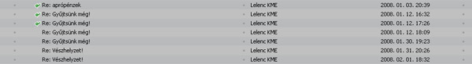

Nem foglalkoznék már a Lelenc KME-vel, de azt nem szenvedhetem, ha szarkavaró módon kamuznak rólam, illetve a Bombagyárról. A mai napon a következõ hozzászólás jelent meg az Index fórumán, nyilván sejtitek,
melyik topicban."A Lelenc KME elnöke én vagyok.
Tomcattel semmiféle megállapodásunk nem volt sem link kihelyzésérõl (banner nem volt), sem pénzgyûjtési akciójáról, kampányáról.
Ha valaki (magánszemély, szervezet, csoportosulás stb.) adomány elfogadására jogosult!) szervezet stb. számára gyûjtést szervez (teljesen mindegy, hogy tárgyi avagy pénzadományt) a két fél errõl megállapodik. A kedvezményezett meghatalmazza a gyûjtõt az adomány átvételére, és garanciát kér, kap arra, hogy a kizárólag a kedvezményezett veszi át az adományt, valamint az adakozókkal tudatott célra fordítódik.
Ez a megálapodás írásban történik.
2006 óta folyik a Lelenc Adj egy apró esélyt akciója. Informálisan tudomásunkra jutott, hogy Tomcat is csatlakozott, de én pl. sosem beszéltem vele (sem erõl, sem másról).
Mintegy két héttel ezelõtt kaptunk mailt tõle, "jöhettek az apróért, egy milcsi".
Tisztáztuk, 100-200 kg (70-140ezer forint), és hogy fel kell õt hívni, megmondja hová és mikor mehetünk.
Felhívtam, ekkor hangzott el: videofelvételt készítene, elkísérne az MNB-be, ahol felvenné, amint beadjuk váltásra stb.
Kértem, hogy ettõl tekintsen el.
Nem tekintett el, hanem írt, olvashattátok mindannyian, miként aposztrofálta...
Családomról írt mocskolódásokat nem taglalom, irreleváns volna, természetesen AZT KÖVETÕEN érkezett, MIUTÁN a nyilvánosságtól elzárkóztunk - az egyik lényeges momentum: sikerült a kommentezõk egyikének az édesapám (77 éves) hajdani foglakozásából, édesanyám, sõt az 1991-ben elhunyt nagyapám foglalkozásából arra messzemenõ következtetésre jutnia, hogy AZ az oka annak, hogy nem fogadtuk el a felajánlást. Sajnos senkinek nem tûnt fel, hogy mi nem a felajánlást utasítottuk vissza, hanem a kötelezõen elõírt körítést...anélkül viszont Tomcat nem adta.
Hát így..."
No, kérem szépen, ha a Lelenc tovább folytatja a hazudozást, akkor kénytelen leszek rágalmazás miatt polgári pert indítani, ez ugyanis már túlmegy minden határon. Nem muszáj a Bombagyár nézeteivel egyetérteni, de valótlanságok állítására nincs szükség.
Valóban nem kötöttünk írásos megállapodást arról, hogy gyûjtünk a Lelencnek, eszembe sem jutott, hogy szerzõdgessünk. Bátorkodtam - a többi gyárossal együtt - végrehajtani ezt a szerény magánakciót, és szerzõdések, megállapodások és ügyvédi ellenjegyzés nélkül pénzt gyûjteni a gazdátlan kutyáknak. Bocsánat, nem tudtuk, hogy ennek szigorú feltételei vannak!
Hogy banner igenis volt, arról bárki meggyõzõdhetett az elmúlt fél évben a Bombagyárat olvasta. Ugyanígy ki volt helyezve a Lelenc linkje is baloldalt, a linkek között. Igaz, errõl sem adtam be írásos jelentést.
Arról, hogy sohasem beszéltünk volna a Lelenccel, néhány tucat e-mailt tudok mutatni. Ezek nem csak a Lelenc hírlevelei, jó néhány magánlevél is van közöttük. Mint látható, az aprópénz-gyûjtést is leleveleztük.

Esetleg mutathatok a levelek tartalmából is. Ez itt január 3-i, itt beszéltük meg a pénz átvételét elõször. Volt még pár ilyen.
A gyûjtött pénz mennyiségét természetesen csak megbecsülni tudom, nem volt alkalmam megszámolni. Szerintem jóval több, mint 70-140 ezer, mert nem csak 1 és 2 forintost gyûjtöttünk. Lehet, hogy nincs egymillió, persze. Majd kiderül, ha megszámolják géppel.
A kedves családról pedig én egy szót sem írtam. Hogy több, mint 2500 regisztrált olvasónkból egy úgy gondolta, hogy az elnök szüleinek egykori foglalkozásából lehet következtetni a viselkedésükre, nagyon sajnálom, én ilyesmirõl nem írtam.
Hálás lennék tehát, ha a Lelenc KME elnöke befejezné rágalmazásunkat, és nem kapálózna kézzel-lábbal az ellen, hogy õ egyáltalán tudott volna rólunk. Tudott rólunk, megbeszéltük a gyûjtést, és arról is szó volt, hogy a Bombagyár riportot készít a Lelenc tevékenységérõl és a pénz átadásáról. Ha az elnök asszony úgy gondolja, hogy ezzel magunkat "fényeztük" volna, legyen szíves, beszélje meg a
saját weboldalukon díszelgõ céglogók tulajdonosaival, hogy õk se tegyék ezt.
Megismétlem, hogy kártérítési pert indítok, ha Tanner Anna tovább folytatja a Bombagyár és személyem rágalmazását. Természetesen nem az egyesület, hanem Tanner Anna ellen.